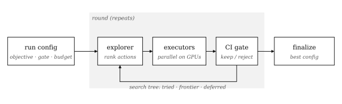
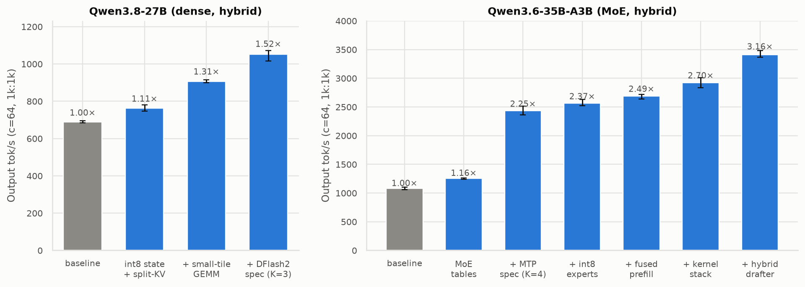
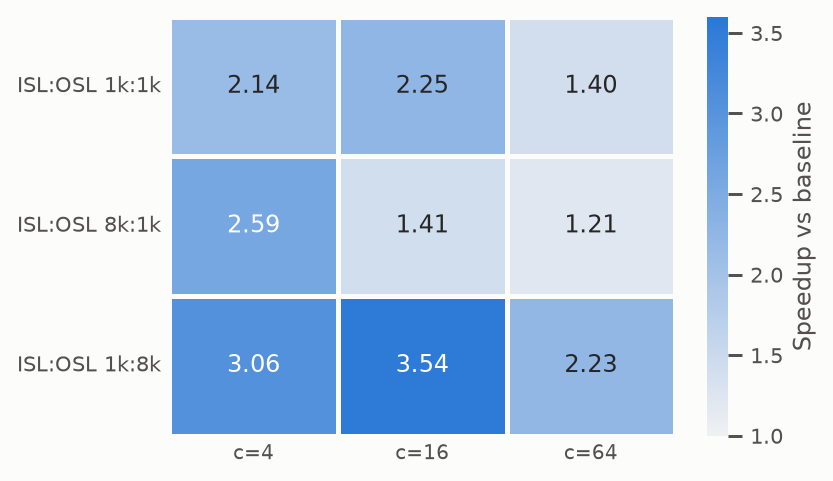
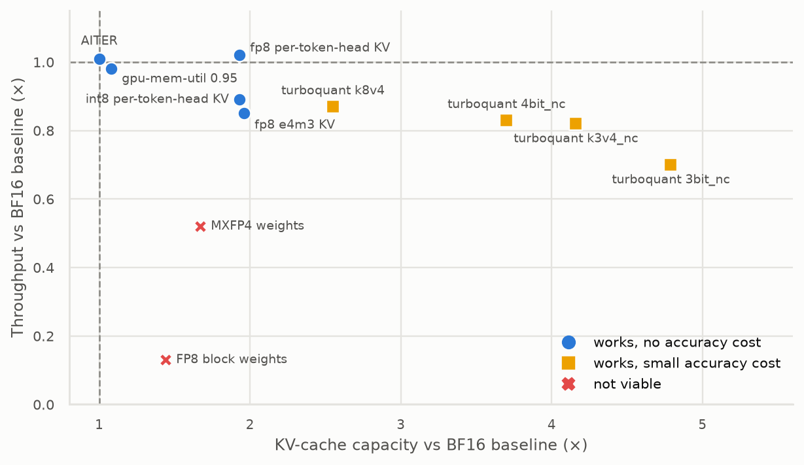
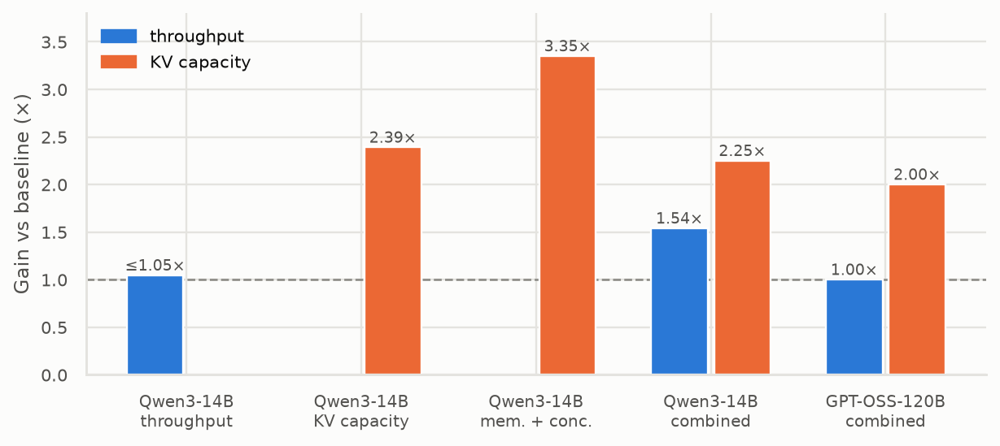

Amo Results
Agentic Model Optimization: results so far. An agent loop searches serving configurations and kernel- or weight-level changes for the fastest setup that doesn’t measurably lose accuracy. MI355X runs from August 2026; MI250X runs from September 23–25, 2026.
Summary
- On MI250X, the throughput wins come from code the agents wrote, not from flags or checkpoints. The biggest step on both models is lossless speculative decoding plus fixes for the hybrid models’ recurrent state. Every off-the-shelf quantization tested on gfx90a costs speed.
- All MI250X winners pass the gated accuracy check (gsm8k, aime) against the baseline. The Qwen3.6 winner shows a reproducible ~3-point MMLU drop (report-only), so the runner-up (2.70×, no drop) is the safer deployment.
- On MI355X, the wins are mostly capacity: fp8 KV appears in every capacity or combined winner. GPT-OSS-120B was already at the hardware throughput ceiling.
- Evaluation noise drove a protocol change. A 100-item, 1% gate couldn’t separate candidates from noise, so the MI250X runs use 3 fresh servers per config and non-overlapping 95% bootstrap CIs.
How Amo works
Schematic The optimization loop

- Explorer: each round, re-diagnoses the bottleneck from what was measured and writes a ranked queue of actions (the frontier) into a shared search tree.
- Executors: one sub-agent per action implements and screens it on a free GPU set; candidates run in parallel.
- Gate (MI250X runs): 3 fresh-server runs per config; keep only if the throughput CI clears the current best and no gated accuracy CI falls entirely below it. MI355X runs used a 2% relative per-task tolerance instead.
MI250X runs: throughput objective
8× MI250X GCDs (gfx90a), vLLM 0.28.0, TP=2 (4 parallel slots). Engine and TP were fixed by the user. Metric: output tok/s from InferenceX at 64 concurrent requests, 1k input / 1k output tokens. Gated accuracy: gsm8k and aime at N=100 with a 16k-token answer cap.
Fig. 1 Kept configurations, step by step (95% CI over 3 servers)
Each bar is a change the gate kept. Speculative decoding with a lossless spec bundle (deferred-commit recurrent state, packed verify attention, scheduler fixes) is the largest step on both models.

Data
| config | tok/s | 95% CI | × baseline |
|---|---|---|---|
| baseline | 689.2 | [684.8, 695.2] | 1.00× |
| int8 state + split-KV | 762.5 | [746.9, 781.5] | 1.11× |
| + small-tile GEMM | 905.1 | [898.4, 915.3] | 1.31× |
| + DFlash2 spec (K=3) | 1050.6 | [1015.9, 1071.1] | 1.52× |
| config | tok/s | 95% CI | × baseline |
|---|---|---|---|
| baseline | 1079.8 | [1059.3, 1100.0] | 1.00× |
| MoE tables | 1254.3 | [1243.6, 1265.8] | 1.16× |
| + MTP spec (K=4) | 2434.6 | [2358.6, 2512.2] | 2.25× |
| + int8 experts | 2562.3 | [2519.3, 2628.9] | 2.37× |
| + fused prefill | 2689.5 | [2640.7, 2718.3] | 2.49× |
| + kernel stack | 2918.7 | [2836.6, 3008.4] | 2.70× |
| + hybrid drafter | 3413.4 | [3368.1, 3480.2] | 3.16× |
Fig. 2 Qwen3.8-27B winner across shapes and concurrency
Wins at every point, most at low concurrency and decode-heavy shapes. Single runs, not CIs. No baseline grid exists for Qwen3.6.

Data
| shape | c=4 | c=16 | c=64 |
|---|---|---|---|
| 1k:1k | 2.14× | 2.25× | 1.40× |
| 8k:1k | 2.59× | 1.41× | 1.21× |
| 1k:8k | 3.06× | 3.54× | 2.23× |
Accuracy at the final configs
| model | metric | baseline | winner | verdict |
|---|---|---|---|---|
| Qwen3.8-27B | gsm8k strict / flex | 0.707 / 0.770 | 0.697 / 0.757 | pass (CI overlap) |
| Qwen3.8-27B | aime (16k cap) | 0.687 | 0.693 | pass |
| Qwen3.8-27B | mmlu · hellaswag · wikitext ppl | 0.8432 · 0.61/0.75 · 9.2943 | 0.8447 · 0.61/0.75 · 9.2946 | unchanged (report-only) |
| Qwen3.6-35B-A3B | gsm8k strict / flex | 0.970 / 0.980 | 0.980 / 0.990 | pass |
| Qwen3.6-35B-A3B | aime (16k cap) | 0.043 | 0.033 | pass (floor-bound) |
| Qwen3.6-35B-A3B | mmlu (report-only) | 0.8435 | 0.816 / 0.810 | ~3-pt drop, reproducible |
Qwen3.6 AIME scores sit near the floor because its verbose thinking rarely finishes inside the 16k cap. The MMLU drop was localized to the hybrid-drafter step (not the int8 experts); the runner-up config without it reaches 2.70× [2.62, 2.79].
gfx90a feasibility of known levers
Fig. 3 Throughput vs KV capacity per lever (Qwen3.8-27B, MI250X)
fp8 per-token-head KV is the one free lever: 1.93× capacity at unchanged speed. Turboquant trades 13–30% speed for 2.6–4.8× capacity. FP8 and MXFP4 weights have no native path on gfx90a.

Data
| lever | throughput | KV capacity | wikitext ppl Δ | verdict |
|---|---|---|---|---|
| fp8 per-token-head KV | 1.02× | 1.93× | +0.01% | works |
| int8 per-token-head KV | 0.89× | 1.93× | −0.01% | works |
| fp8 e4m3 KV | 0.85× | 1.96× | 0.00% | works |
| turboquant k8v4 | 0.87× | 2.55× | +0.05% | small accuracy cost |
| turboquant 4bit_nc | 0.83× | 3.70× | +0.05% | small accuracy cost |
| turboquant k3v4_nc | 0.82× | 4.16× | +0.05% | small accuracy cost |
| turboquant 3bit_nc | 0.70× | 4.79× | +0.08% | small accuracy cost |
| gpu-mem-util 0.95 | 0.98× | 1.08× | 0.00% | works |
| AITER | 1.01× | 1.00× | 0.00% | works |
| FP8 block weights | 0.13× | 1.44× | +0.30% | not viable |
| MXFP4 weights | 0.52× | 1.67× | +10.5% | not viable |
| fp8 e5m2 KV | — | 1.96× | ×18.7 ppl | silently corrupt output |
On MI355X, turboquant cost ~4× throughput; on gfx90a it costs only 0.70–0.87×. fp8 e5m2 KV passed the smoke test’s confidence check while producing garbage, and was caught only by the keyword probe.
Evaluation reliability
- 100-item gates are inside the noise. An unchanged Qwen3.8-27B moved 4 gsm8k questions across server restarts and 7 aime questions across repeats. One question is worth 1.3–2.6% relative, so a 1% tolerance fails any single lost question.
- Answer caps decide aime. At a 2048-token cap, 54% of Qwen3.8 aime answers were truncated (aime 0.42); at 16k the same model scores 0.69.
- Wikitext perplexity is the stable signal (±0.004% across servers) and separated lossy from lossless changes in every case.
- Harness bug found and fixed: lm-eval’s
"Question:"stop sequence truncated Qwen3.6’s thinking, scoring gsm8k 0.00. It was fixed before any comparison. - Host noise: NUMA auto-balancing on the host triggered ~10 s GPU queue evictions that stalled speculative-decoding runs. A per-container NUMA-local wrapper removed them, without inflating the baseline (682 vs 689 tok/s).
MI355X runs (August 2026)
AMD MI355X (gfx950), vLLM 0.21.0 / SGLang 0.5.12, TP=1. Guardrail: 2% relative per-task tolerance on gsm8k, mmlu, hellaswag and wikitext.
Fig. 4 Gains per model and objective
Combined = throughput + memory. Capacity objectives win through KV precision; throughput gains are small except in the combined run, where fp8 KV plus fp8 weights give 1.54× at c=512.

Data
| model | objective | winning config | throughput | KV capacity |
|---|---|---|---|---|
| Qwen3-14B | throughput | SGLang + torch-compile | +0.6–4.6% | — |
| Qwen3-14B | KV capacity | fp8 weights + turboquant k8v4 KV | tie-break | 2.39× |
| Qwen3-14B | memory + concurrency | 4bit_nc KV + fp8 weights + mem-util 0.95 | tie-break | 3.35× |
| Qwen3-14B | throughput + memory | fp8 KV + fp8 weights + mem-util 0.95 | 1.54× @ c512 | 2.25× |
| GPT-OSS-120B | throughput + memory | fp8 e4m3 KV (throughput at HW ceiling) | flat | 2.00× |
Caveats
- MI250X speedups are best within a fixed serving config (engine and TP pinned) at one benchmark point (c=64, 1k:1k), with a greedy client.
- The Qwen3.8-27B CI run ended early: a sub-agent’s
pgrep -falso matched its own shell and killed the orchestrator. Six queued directions and the final stack never ran; the result was finalized afterwards by the user agent. - Three Qwen3.6 non-spec winners (int8 experts, MoE launch bundle, int8 GDN state) have no accuracy verdict.
- MI355X gsm8k baselines vary between 0.63 and 0.68 across runs of the same model, consistent with the eval noise above; gains there (e.g. +28.7% gsm8k) should not be read as quality improvements.
- An earlier Qwen3.8-27B run with a 1% / 100-item gate reached 1.109×; it is superseded by the CI-gated run.
Sources
All numbers transcribed from /home/arkamukh/amo: docs/amo-findings.md (MI355X), runs/mi250x_qwen3.8_report.md (feasibility, noise study), runs/throughput-qwen38-27b-ci/{report,status}.md, runs/throughput-qwen36-35b-a3b-ci/report.md. Page generated by website/amo/build.py.